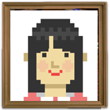
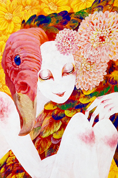
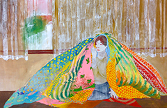
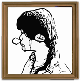
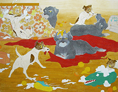

かとう はるか
■メッセージ
優しいけど寂しかったり、と相反するけども同じ何かを表現出来たら、と思います。
■ホームページ/サイト等
Tumblr/ http://kato-haru.tumblr.com/
mail/ kato_u23@yahoo.co.jp

松山 みあさ
■メッセージ
自分の中にある言葉にできない熱を大事にして日々制作しています。
■経歴
1995年 東京生まれ
2013年 多摩美術大学日本画専攻入学
2014年 五美大交流展 出展
2015年 始展(SAKuRA GALLERY にて)出展
同年 同大学3年在籍中
■ホームページ/サイト等
Tumblr/ mia-031.tumblr.com
Facebook/ http://facebook.com/miasa031
mail/ miasa.031@gmail.com

■期間：6月1日(月)～6月15日(月)

吉野 友理
■メッセージ
日常の中で、非日常の中で、イソイソ、ノンビリ、ワクワクして動き回る生き 物たちを描いていきたいと思います。にんまりして頂ければ幸いです。
■経歴
1994年 3月生まれ
2015年現在 多摩美術大学絵画学科日本画専攻
第3学年 在籍中
■ホームページ/サイト等
Tumblr/ http://yuriyoshino.tumblr.com/
Twitter @takekino3
